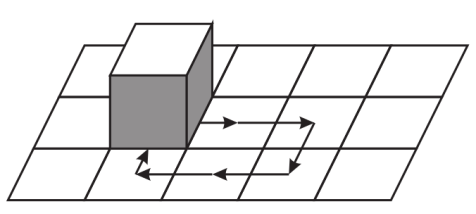

Problema 2.1.20.
Sobre uma das casas de um tabuleiro infinito, existe um cubo que cobre a casa perfeitamente. A face no topo do cubo é branca, enquanto as demais faces são pretas. A cada passo, podemos tombar o cubo para um dos lados. É possível que:
- Após 2004 passos o cubo volte ao mesmo quadrado com a face branca para baixo?
- Após 2005 passos?
Solução.
- Sim. Vire o cubo duas vezes para a direita, uma para baixo, duas para a esquerda e uma para cima (figura 4). Após estes seis passos, a face branca estará virada para baixo. Sobram 1998 passos, basta tombar repetidamente o cudo para direira e para esquerda. 
Figura 2.1.21. - Não. Pinte o tabuleiro na maneira usual. Note que, a cada movimento, o cubo muda de uma casa preta para uma casa branca e vice-versa. Logo, após um número ı́mpar de movimentos não poderá estar na casa inicial.